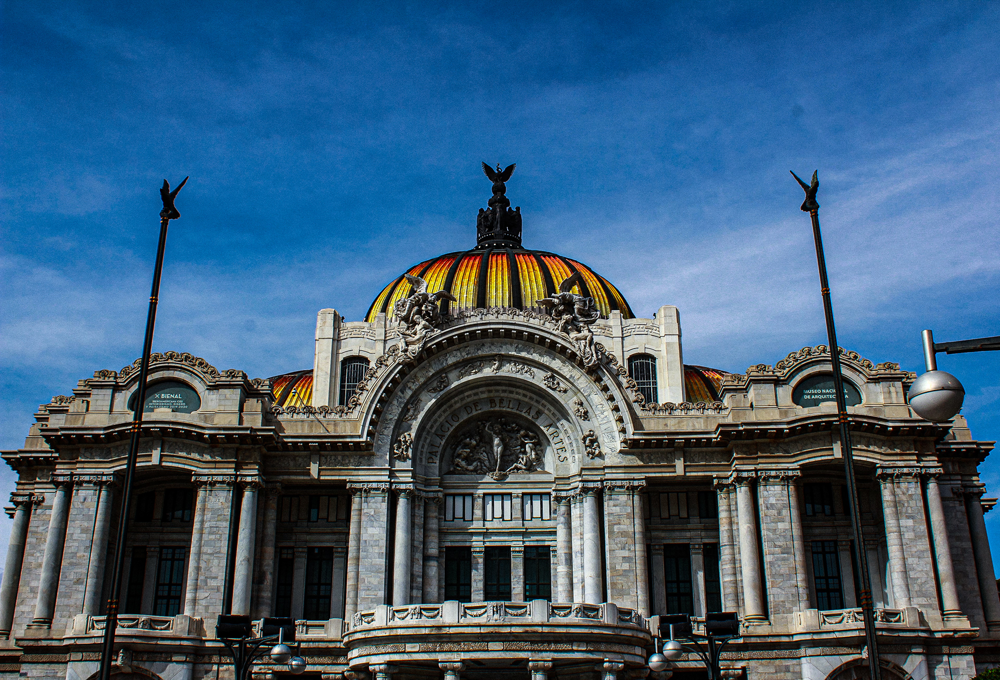

Entrada 1: Descubriendo CDMX
La Ciudad de México es un destino vibrante que combina historia, cultura y modernidad en cada rincón. Desde paseos tranquilos en barrios llenos de encanto hasta experiencias únicas que despiertan los sentidos, la capital del país es un lugar donde siempre hay algo emocionante por descubrir. En este artículo, te llevaremos por un recorrido inolvidable para explorar las 10 mejores actividades que no te puedes perder, ya sea que seas un visitante primerizo o un chilango buscando redescubrir tu ciudad con ojos nuevos.
Prepárate para sumergirte en la riqueza cultural de sus museos de clase mundial, disfrutar de vistas espectaculares desde sus miradores y saborear la gastronomía que ha conquistado corazones en todo el mundo. Además, te revelaremos secretos y rincones poco conocidos que harán de tu experiencia algo verdaderamente memorable. No importa si buscas adrenalina, arte, o momentos de relajación, aquí encontrarás inspiración para disfrutar al máximo de la increíble diversidad que ofrece la Ciudad de México. ¡Acompáñanos a explorar!